The five great games of patience and The triple crown
A. Introduction
Jim recently asked me to make a record of the rules of the five great games of patience,
together with tips to help the player to have the best chance of defeating the cards.
He seemed to think that this was a pretty urgent matter.
No doubt the reason for the urgency was the statistical possibility that the Great Reaper might
prevent me carrying out this task.
This note is to comply with Jim’s request so that the benefit of my knowledge and
experience is not lost to posterity.
Before proceeding further, I ought to define some of the terms I use.
The words “row” and “column” are as prescribed by my computer. Rows run across the table
and columns from the far side of the table to the near side.
The words “top” and “bottom” could be a source of confusion. In some games,
piles of cards are arranged so that the player can (just) see the identity of all the cards in the pile.
In such circumstances, the “top” card is the one (sometimes wholly visible) nearest the player.
The “bottom” card (only partly visible) is the one furthest from the player.
B. Aunty Allis
The origin of the game
You will not be surprised to learn that this game was introduced to my family by none
other than Auntie Allis. She was born in 1890 and was the elder sister of Grand-pa.
The initial lay-out and object of the game
The initial lay-out comprises four rows of eight face up cards each,
amounting to thirty-two cards in total. The first three rows are the
operational rows and the fourth row is a rubbish row. Quite a bit of space must be
left under the rubbish row for more rubbish to be placed on
top of earlier rubbish without totally concealing the latter.
The object of the game is to end up with all the cards (except the aces which get chucked
aside as the game progresses) in piles of four cards of the same suit in the operational rows.
In the first row, the initial card must be the two of a suit. On top of the two comes the five,
then the eight and finally the Jack (all of the same suit). In the second row, the pile
comprises the three, then the six, then
the nine and finally the queen. The third row is similar with the four, seven,
ten and king.
If you achieve this happy position, you end up with no cards in the rubbish row.
You have then defeated the cards and have won.
The play and the rules
After the initial lay-out, you start to play. Any ace in the rubbish row is chucked out.
Any ace in an operational row may be chucked out and replaced by the appropriate card
(a two, three or four) from another row. Similarly, if an initial card lies in the
correct operational row (e.g. a two in the first row), it may be covered by moving the
appropriate card (in this case, the five of the same suit) from another row.
Similarly again but at a later stage, if there are two cards in a pile (e.g.
the three and then six in the second row), they may be covered by moving the appropriate card
(namely, the nine of the same suit) from another row.
Throughout this process and throughout the game, there is a golden rule. It is never permitted
to create a space in an operational row unless it is immediately filled by moving a starter card
(a two, three or four) from another row.
The above description of the play deals only with handling the initial lay-out.
After all (desirable) moves have been made, eight further cards are dealt out along the rubbish row
on top of any cards already there but slightly nearer the player so that they can see the lower
cards in the rubbish row.
The play then continues. This is pretty much as above except that, as the game progresses,
one hopes to be moving gradually higher cards out of the rubbish row (e.g. eights on fives in the
second row or tens on sevens in the third). Every time play grinds to a halt, a further eight cards
are dealt onto the top of the rubbish row and so on. A rather obvious rule throughout the game is
that cards which have been moved into their operational row can never be moved again.
At the end of the play, you either find you are left with cards in the rubbish row
or you have no cards left in the rubbish row. The former is defeat and the latter is victory.
The whole game usually takes about twenty minutes.
Tips which may help
Auntie Allis is probably more a game of chance than of skill. With regard to the former,
it sometimes quickly becomes obvious that there is little or no chance of winning and that it
would be better to shuffle the cards and start again.
Such occasions often arise after the initial lay-out. One example of this is the absence of aces
in the operational rows. Another is a preponderance of honours in a single operational row which
blocks entrance to that row.
Similar occasions arise later in the game in the rubbish row. One example of this is when a mass of
low numbered cards get covered by higher numbered cards. Another is when, say, a king of Spades has been
played into its operational row and the second king falls on top of the seven in the rubbish row.
Despite the element of luck, there are also elements of skill.
Tips about these are set out below:-
When dealing out the initial three operational rows, Granny and I often used to say
“Ace, please” and “Thank you” if they arrived. This was not skill. Merely superstition.
In dealing with the opening lay-out and subsequently, it is not always wise to make every move
that can be made. One ought first to think what space would be available in each operational row
for moving initial cards (twos, threes and fours) which may later be dealt onto the rubbish row.
Sometimes this persuades the player to postpone possible moves.
The presence of honour cards and other high numbered cards in the rubbish row following the
initial lay-out can be very good news. Do not be in too much of a hurry to play them.
This leads on to the “dead card” theory which, I think was invented by myself.
The dead card theory applies only to the rubbish row and is applied by tilting all dead
cards 45 degrees to the right. After the initial lay-out, all honours are dead cards and so
are their immediate juniors (e.g. the ten of diamonds is the immediate junior to the king of
diamonds). When the next eight cards are dealt on the rubbish row, any potential dead card which
lies on an existing dead card becomes itself a dead card.
The dead card theory should be continued throughout the game. Sometimes, previously non-dead
cards become dead cards because their senior cards have subsequently fallen on other dead cards.
Sometimes, one gets whole chains of dead cards such as the queen, nine, six and three of hearts.
There is little point then in hurrying to get up the three of hearts because there may be only
one early vacancy in the second operational row which may be better kept in case another three
turns up.
Sometimes, I have ended a game with thirty or more cards in the rubbish row but have still won
because all of them are dead. All that has to be done is to be careful about playing them in
the right order.
Another tip concerns danger cards in the rubbish row. This is a senior card lying on
top of one of its junior cards such as a king of diamonds landing on a column containing the
ten of diamonds. My practice is to tilt the danger card through ninety degrees so that I remain
aware of the impending peril. Obviously, if the second king of diamonds later falls on a dead
line and itself becomes a dead card, the peril is totally removed. I then tilt the former danger
card forty-five degrees to the left to indicate that it must be played before the other card of
the same number and suit.
[On a computer or phone, cards in the rubbish row may be tilted one or more times by clicking
or touching them.]
C. Seven and Sixes
The origin of the game
When I was about nineteen years old, I broke my jaw and had to go into a hospital in St. Albans.
As I was due to be there for at least a week, I took a couple of packs of mini-cards with me to
keep myself amused. One of the nurses there saw me playing patience on my bed-table and
asked me what I was playing. I then taught her one of my games and she taught me seven and six.
The initial lay-out and object of the game
The initial lay-out uses up fifty-two cards. This comprises a first row of thirteen of which
the first seven are spaced out at least half way across the card-table and the last six are
spaced out half way between the first seven and the near edge of the table. This first row is
dealt face down.
A second row is then dealt on top of the first also face down. Two further rows are dealt
on top of the first two but these last two are face up. Care is taken to ensure the player can
see the identity of the face up cards in each column and also the number of face down cards
underneath.
The object of the game is to end up with eight complete books of cards. A book is
a set of thirteen cards with the king at the bottom and the ace at the top with consecutive
numbers in between and alternating colours all the way.
The play and the rules
After the initial lay-out, you start to play. Any card may be placed on an immediately
senior card of the opposite colour (e.g. a black seven can be placed on a red eight).
Also, any group of cards already joined together may be placed on another
immediately senior card of the opposite colour (e.g. the black seven on the red eight can be moved
as a group or set onto a black nine).
If both of the face up cards in a column have been moved to other columns, the top face down
card is turned over. If in due course both the face down cards in one column have been moved
to other columns, a space is created. Only kings can be moved into spaces and kings can only be
moved into spaces. If the king which is moved into the space is the top of a completed book, the
book is turned face down and no further cards can be placed in the column which it occupies.
The first phase of play comes to an end when there are no further moves which can be made
(except occasionally for creating spaces and moving kings into spaces as to which see
tips (k) to (n)). A new row of cards is then dealt. The number of cards in the new row is
usually thirteen but it is occasionally less than thirteen because cards may not dealt into
spaces nor may they dealt into columns where the only occupant is a completed book.
After this secondary dealing, the play continues as hitherto until no more moves can be made.
There is then a tertiary dealing followed by more play and so on. There are always at least five
dealing sessions to cope with the total of a hundred and four cards. There may also be a
sixth if any of the previous deals were of less than thirteen cards due to spaces etc. In
that case, the sixth starts in the first column and proceeds in the normal way until the hundred
and fourth card is on the table.
Several rules are implicit in the above paragraphs but there is another which I ought to mention.
This rule is like marriage. When two (or more) cards are joined together in a set, they must
never be separated. I cannot think of any circumstances in which this rule is disadvantageous.
At the end of play, you may end up with eight completed books in which case you have won.
More probably you will reach a point when no further moves can be made and the rotten cards
have won. The whole game usually takes about thirty minutes.
Tips which may help
Seven and six is a difficult game to get out which presumably means that it is a game of chance.
However, it remains a good game because it is often possible to get it out however awful the
prospects look. Indeed, I can remember some rare occasions when I had barely seen even a smell of a
space before the last card was dealt but have then plodded towards a brilliant victory.
There certainly are some skills in the game and, without them, defeat is almost inevitable.
Here are some tips which may help:-
An untidy player is faced with an appalling jumble of cards with columns miles long. To win
the game, it is essential that the cards are laid out in the neatest possible manner so
that the identity of each card can be easily seen.
One of the ways of achieving this is what I will call “sideways jinking”. This was a brilliant
improvement in technique invented by Bri.
Sideways jinking applies to all the face up cards in every column. If there are two face up
cards in a column which are not part of a set, the card immediately above the face down cards
is aligned precisely with the face down cards. Then, the card on top is aligned about a quarter
of an inch to the right.
Taking this principal further, there might be three separate sets of cards on top of two
face down cards. In this case, the set nearest the face down cards is aligned with the face
down cards, the next set is aligned a quarter of an inch to the right and the third is
aligned a quarter of an inch to the left. And so on.
Sideways jinking enables the player to see at a glance which cards are in sets
and which are not.
Another way of achieving neatness is to squash sets together so that the only cards which
can be seen are the most senior and junior cards. This helps to prevent columns getting too
long.
When cards or sets are being moved from one column to another there is frequently a choice
to be made because two seniors are available to receive one junior or because two juniors
are both looking for the same senior. In the first case, don’t sweat. It very seldom makes
the slightest difference which senior receives the junior. In the second case, postpone
your decision as long as possible because a second senior may pop up when a face down card
is turned over. Then, when you have to make a decision, be guided by other tips below.
When in any column a card or set is separated from an immediately senior card by
another card or set (e.g. a red six on top of another card or set which itself is on
top of a black seven), this is a danger signal. This is because, if the other three
red sixes became part of sets with their black sevens, defeat would be inevitable. The tip
therefore is to turn the junior card at risk (the red six) at right angles so that the danger
is highlighted and can be remedied as soon as an opportunity (a black seven) appears.
The dangerous situation in (h) may be concealed because the senior card (the black seven) may
be one of the face down cards in the column. Where there are a large number of sideways
jinks in a column, the odds of encountering this concealed danger are much higher.
This indicates that a large number of sideways jinks in a column is itself a danger
signal and should be remedied as soon as possible.
Granny had a dictum which said that “Kings and Aces are the curse of Seven and six”.
This reflects the facts that kings can only be moved to spaces and aces cannot
have any other cards moved on top of them. Dangers are caused by both.
First danger. If there are a lot of kings face up but not in spaces, it becomes a
priority to create a space to start receiving them. Failure to do this leads to
impending disaster.
Second danger. Too many aces on the top of columns is dangerous and can lead to disaster because
they create a shortage of columns available for the move of cards or sets from other columns.
Despite the warning in (k), odd occasions arise when a single space is available and several
kings are ready to move into it but no such move would generate further moves. In these
circumstances, it may be wiser to postpone selection of the king until cards have been
dealt for the next session. The space remains available.
Sometimes a game progresses well. Two or more completed books lie in dead columns or there
are a surplus of empty spaces awaiting the arrival of kings. This apparent success can
become a real danger because all of these are dead rows which can create an acute shortage
of columns available for the move of cards or sets from other columns.
D. Uncle Remus
The origin of the game
Not known be anyone still alive.
The initial lay-out and object of the game
The initial lay-out comprises fifty cards. These are dealt out in five rows of ten cards each,
the first four being face down and the fifth face up. These rows must be dealt almost out of
reach of the player because very long columns emerge as the game proceeds. The initial five
columns are almost on top of each other but not quite on top because the player needs to know
how many face down cards remain in each column.
The object of the game is to create eight completed books. In this game a completed book
is a set of thirteen cards of the same suit from king all the way down to ace. If and when
a book is completed, it is removed from the playing area.
If you end up with eight completed books and no cards in the playing area you have won.
If you do not, the cards have won.
The play and the rules
After the initial lay-out, you start to play. Any face up card may be moved onto an immediately
senior face up card regardless of its suit. Sets of face up cards may be moved onto an immediately
senior card regardless of its suit BUT sets may only be moved as sets when every card of the set
is of the same suit. When a move reveals a face down card, the top face down card is immediately
turned face up.
If in due course all four face down cards in a column are turned face up and subsequently moved
onto other columns, a space is created. Any card may be moved into a space. It is not obligatory
to fill a space or to move every moveable card prior to the end of the initial (or subsequent) session.
However, the initial (or subsequent) session usually comes to an end when every possible move (or
every advantageous move) has been made.
When the initial session is ended, ten further cards are dealt out. These are placed on top of each
column or (unlike Seven and Six) in a space if the player decided to leave it vacant at the end of
the previous session. This new deal can annoyingly spoil what was previously a rather promising game.
The player then proceeds exactly as they did in the initial session.
After the secondary session and four later sessions, the player should be left with four un-dealt
cards. If there are more or less than four cards left, the player has cocked up one of the deals
and has to surrender. To avoid this ignominious situation, players are advised to count the un-dealt
cards after every deal.
Assuming no cock-up, they deal these four cards onto the first four columns and proceeds as hitherto.
At the end of the final session, the game is over and the player has either won or lost.
The whole game, particularly if it is well played, usually takes comfortably more than an hour, maybe
as much as an hour and a half.
Tips which may help
Obviously, there are elements of luck in this game but I think it is mainly a game of skill.
There was a time when I occasionally played with only nine columns or with five initial rows
face down in order to make the game more of a challenge. At that time, I was much younger and
found it almost too easy to win. Nowadays, I don’t find it as easy.
The following are a number of tips to help the beginner:-
This game can produce very long columns as it progresses. It is therefore important to keep
the playing area neat and tidy so that all cards can be seen.
Particularly in a long column, it is easy to get confused between sets of different suits and sets
of the same suit. For example, a four of hearts lying on a five of diamonds looks quite like a set
of the same suit. If you move the two as a set and fail to rectify the error at once, you have
cheated and must surrender.
In order to try to avoid this sin, I have invented a technique similar to sideways jinking in
Seven and Six. Every time there is a situation such as in (b), I turn the lower card (the four
of hearts) through ninety degrees to remind me that it is not the same suit as the five of
diamonds. I do not think that any one else has used this technique.
It is vital to remember all the time that the eventual object of the game is to complete books
of the same suit. As you play, you should try as a priority to create sets of the same suit
even if you later have to break them up for some other reason. In Uncle Remus
(unlike Seven and Six) the marriage rule does not apply.
The creation of spaces during each session is a vital top priority. Imagine that you are in
the middle of the game with several sets of muddled suits and that one column contains an
eight of spades and another contains a nine of spades. By using the two spaces, it is amazing
how you can fiddle around the cards to advantage. You find that eventually you get the eight of
spades on the nine of spades and can then fiddle all the other cards back into their long columns
without at the end having lost a space.
This fiddling process can and must be repeated time and time again. It seems interminable
but it is crucial. It is also the reason why the game takes so long.
Sometimes, usually later in the game, you may spot that you have a potential complete book in
some suit. You then must think whether you can fiddle the potential book into a pukka book and
remove it from the playing area. Do this if you can. Games are seldom lost after disposing of
two completed books.
There frequently comes a point at which you want to use (and lose) a space. You should do
all your fiddling before you lose the space and, when you use it, your prime aim should be
to create another space. Thus, if there is a column with a single card or a same suit set lying
on a single face down card, this is almost certainly the one to move into the space.
Similarly, if there are two competing cards or sets which could be moved into a space,
choose the one which has fewer face down cards underneath it.
Towards the end of each session (and before sacrificing a space), think of what may happen
when the next session starts and you have to deal a fresh card on top of each column. If you are
not careful, you may find you have left yourself in a position where you have little hope of
ever getting another space again.
In order to avoid the horror in (i), you must try to end each session with as many “accessible”
columns as possible. By accessible, I mean columns with only a single face up card or a single
face up same suit set. This may cut across the objectives of earlier fiddling but it increases
the chances of creating spaces in the next session. It can sometimes be sense to leave a vacant
space at the end of a session for this reason but you will curse if a king lands in it.
In the process of creating accessible columns, you may find it helpful to create rubbish
columns full of long sets of different suits. Don’t worry too much about this. You may
be able to clean up the rubbish columns in later sessions.
Kings are danger cards because they cannot be put on other cards. To illustrate this,
imagine a situation where the eight kings appear in eight separate columns. This would make it
nearly impossible to create spaces and would spell disaster. It follows from this that two or
three kings in a single column may actually be quite good news.
Always remember that at the end of the game you are going to have to deal out the four last cards
on the first four rows. This means that, if or when you have a king in a space, it is better to
have it (or move it into) one of the first four columns. Similarly, a space is a better space if
it is not in the first four columns. Move a king or something else into a space in the first four
columns and transfer the space elsewhere.
E. Senior Wrangler
The origin of the game
This again is lost in the mists of time.
However, I suspect that Uncle Johnnie may have introduced it to the family.
He was an expert at maths.
The initial lay-out and object of the game
Every single card in both packs is dealt face up in the initial lay-out. When finally
laid out, they comprise eight columns of twelve cards each (ninety-six cards) as far
as possible away from the player and a row of the remaining eight cards nearer to the
player. The masses of cards in their eight columns are placed on top of each other but
so that the cards underneath can be identified.
The row of the remaining eight cards are placed a few inches from the near edge of
the table so that there is room to build eight piles of cards between the eight
cards and the edge of the table. For want of a better name, I will call the eight
cards the “key” cards.
The actual lay-out has to be done in the correct order. The first cards to be dealt
are the eight key cards. These are dealt one by one from left to right. If a
king appears or a card of the same number as another key card, it is placed at the
top (which later becomes the bottom) of the left hand column. If another similar card
appears, it is similarly placed in the second column. And so on, until there are eight
key cards on the table.
Having dealt out the key cards (all different numbers and none of them a king),
the player has to stand up to deal the masses of cards in the columns. The first
row of eight is completed and the second is dealt out left to right on top of the
first with just sufficient space to see the identity of cards underneath. This is
repeated until their are eight complete rows.
When the ninth row is dealt (this is a tip which will be explained later), it should
only partly overlap the eighth row. The remaining three rows are then dealt out in
the normal way and every single card in the two packs can now be identified.
The object of the game is to remove all the cards one by one from the top
(or near end) of the columns and place them on piles on the near side of the key
cards. The player’s right to move cards in this manner is governed by rules
explained later.
If by the end of the game every single card has been moved from the columns onto the
piles, the player is victorious. If not, the rotten cards have won again.
The play and the rules
Before describing the play, it is necessary to explain one basic principle and also the rules
governing the removal of cards from the columns to the piles. The basic principle is that suits
and colours do not matter. The only thing that matters is the numbers of the cards.
The basic rules about moving cars onto piles are governed by the number of the key card.
The first card to be placed to be placed on the pile is either twice the number of the key card or,
if doubling the number of the key card producers a number in excess of thirteen, it is
twice the number of the key card less thirteen.
The second card to be placed on each pile is the sum of the key card and the card showing on
the pile or, if this sum is more than thirteen, it is the same sum less thirteen. The third
and subsequent cards to be placed on each pile are calculated in the same manner until there
are eleven cards in the pile.
Unless the player has made a cock-up, they will find (and you can prove this by simple algebra)
that the eleventh card on each pile plus the key card always add up to thirteen.
The last card to be placed on the pile is therefore always a king which completes the pile.
At this point, the pile is placed on top of the key card to indicate that no more cards may be
placed on top of it.
This set of rules sounds frightfully complicated but you quickly get used to it. A couple of
examples, one with a key card of six or under and the second with a key card of seven or over.
Assume a key card of five. The numbers which go on its pile are ten, two, seven, queen, four, nine,
ace, six, jack, three, eight and king. Assume a key card of nine. The numbers which go on its
pile are five, ace, ten, six, two, jack, seven, three, queen, eight, four and king.
The completion of piles seldom takes place until later in the game. In order to describe how the
game progresses, we must now go back to the beginning. After the initial lay-out, the player
is faced with a mass of cards, ninety-six in all in eight columns. They must then start removing
cards off the top of columns to start creating the piles and they must do this in accordance with
the above rules.
After a while, the player will find that there are no more cards which can be legitimately be
moved onto the piles. Alternatively, there can be one or two cards which could be moved but which
the player wishes not to move. Possible reasons for the latter are explained under “tips” later
in this section.
The first of eight sessions is now over. The player then picks up the cards remaining in the
first column and deals them out across the top of the eight columns. To make sure this deal
is done correctly, I should explain that the card which was at the bottom of the first column
(i.e. furthest from the player) appears in the same place again. Also, the ninth card previously in
the first column falls on top of it (unless it had been moved onto a pile in the first session).
The second session of play then proceeds exactly as the first. At its end, the player picks up
the cards in the second column and deals them out across the top of the eight columns. To avoid
misunderstanding, I should explain that the card which was previously at the bottom of the second
column is dealt onto the first column.
This process continues until the end of the eighth session. At this point, a loser
is faced with cards still in various columns none of which can be moved whereas a winner has
no cards in the columns but has eight complete piles with kings on top of them. The whole
game seldom takes less than an hour.
Tips which may help
There are obviously important elements of luck in Senior Wrangler. If for example the initial
lay-out displays most of the kings near the top (or near) end of the columns, you have not got
much hope and might just as well pack it in and start again. If on the other hand most of the
kings are near the bottom of the columns, you have a very good chance of success.
Disregarding extreme instances of bad luck, Senior Wrangler is a real game of skill.
As all the cards are face up, a player who was as clever as a computer would know at once
whether he was going to get the game out. As none of us are that clever, we just have to
exercise as much foresight as we possibly can.
Here are some tips which may help:-
As mentioned above, when dealing out the cards in the columns, it is wise to have a
semi-gap between the eighth and ninth card in each column. This helps the player to
foresee where the cards will fall in later sessions when their columns are
eventually dealt out.
Kings are dangerous because they are the last card in every pile. It is important
to foresee where they will fall when their column is eventually dealt out.
Kings can be in good positions. If their is a king at the bottom of the first column,
or second bottom in the second column or so on, you know they will be at the bottom of
their column when it is dealt out.
The first session is very important. You should not rush into making moves but should think
through the impact before making a series of moves. If you can make a lot of moves in the
first session, it simplifies the play in later sessions.
It is always good news if you can move the top four cards in the first column in the first
session. This ensures that only one card will lie in the first column at the start of the second
session. You should also try to ensure that this card can be moved in the second session.
This may be a good reason for not moving another similar numbered card from another column
towards the end of the first session.
Later in the game, it will be important that there are kings at the bottom of columns which
have been dealt out. Do your best to contrive this situation.
For example, suppose there is a king third bottom in the first column and another second bottom
in the third column. What you should aim to do is to ensure that first king falls in the tenth
position in the third column. You should also try to ensure that there will be no cards left
in the second column at the end of the third session. If this can be achieved without undue
sacrifice, you will start the later sessions in the happy position of having at least two
kings “on the ground” at the bottom of their columns.
As the game progresses, every card will at some stage feature near the top of one or
another column. However, after their original column and subsequent columns have been dealt
out, they may never get to the top of a column again. With bad luck or bad play, you get
nearer to the end of the game with horribly lengthy columns on the left hand side of the table.
This spells disaster.
Because of this danger, you should do your best to move almost all cards (except kings)
which have been dealt out onto the left hand side of the table. This is a high priority.
Sometimes, one is tempted to move a series of cards onto a single pile. This can lead to a
situation when several piles are nearly complete but others have barely been started. This can
be an uncomfortable situation and is better avoided.
I suspect it would be possible to add many other tips to this list but it is better to stop
here. If the reader understands the ones shown above, their mind will be working along the
right lines and they will be able to invent their own tips.
F. Kings
The origin of the game
This game was also introduced to my family by Auntie Allis. The Keeling family
found the game so difficult that we slightly bent one of the rules.
Auntie Allis said we were cheating.
The initial lay-out and object of the game
Before anything else happens, the eight kings are extracted from the pack and
laid out in two columns of four different suits. There has to be a large space in
between the columns for the main playing area and another decent sized space nearer
the player. It is usual to arrange the kings with spades at the top, then hearts,
then diamonds and finally clubs.
All other cards are then dealt in the initial lay-out. The first twelve cards
are dealt face up in four rows of three cards each in the playing area between
the columns of kings. You count from one to twelve as these cards and, if the card
put on the table is the same as the recited number, you stop. The card in question
is then taken out of the playing area and placed face down on what will become a
pile of face down cards on the near right hand corner of the table.
You then start again placing the first card in the position from which the card has
just been removed. You then proceed in a similar mode until there are twelve cards
face up in the playing area. You then place one card face down (without looking at it)
on the face down pile on the corner.
You then repeat this process approximately six more times after which you will have
run out of cards. You will by then have at least seven face down cards in the pile
and hopefully a lot more. After the first face up cards have been dealt, the later
face up cards are dealt precisely on top of the earlier ones so that you cannot see
the cards lying underneath. I should add that the piles of face up cards should not
be too close together because at a later stage certain piles may be fanned out.
The object of the game is to move all the cards from the playing area (including
the face down cards which get shifted there later) on to the kings. Cards have
to be put onto the king of the same suit in numerical order. The cards moved
to the left column of kings run from queen down to ace and those on the right run
from ace up to queen.
If you end up with cards left in the playing area, you have lost. If all the cards
end up on the kings, you have won. You are also very clever and lucky because
this is a difficult game to get out.
The play and the rules
The play starts off by taking the top face down card and turning it face up.
You then pick up the appropriate pile from the playing area. For example, if the
card turned up is a seven, you pick up the seventh pile. You then fan out the pile
and the card which entitled you to pick up the pile and place it on the near edge
of the table.
You can now start moving any permitted cards out of the fan or from the top
of piles in the playing area onto the kings. As explained earlier, permitted
cards are queen downwards on the left or ace upwards on the right but always of
the same suit as the king. When all permitted moves have been made, the fan on the
near side of the table can be re-arranged in any order which the player chooses. It
is then placed back in the position from which it had been removed.
The Keeling rules state that the replaced fan may be left fanned out.
This does not mean that lower cards can be moved before the higher ones have
been moved but it does mean that one can now see all the cards in the pile.
Auntie Allis pronounced that this Keeling rule was cheating. Maybe she had an
exceptional memory and never forgot cards once she had seen them in play.
Following the replacement of the fanned out pile, the next face down card is
turned face up and the whole process is repeated. This process continues again
and again until no face down cards are left. At that point the game is over.
You have either won or more probably lost and have taken about twenty minutes
to do it.
Tips which may help
Kings is a difficult game to win. This is because the odds are stacked in favour of
the cards and, if you get a tough initial lay-out, it is unlikely that you will be
able to beat them. There are however a number aspects to the game in which skill, or
perhaps mainly memory, come into play.
Here are a few tips, the first batch all relating to the initial lay-out:-
If a card falls on its own number and is therefore placed face down on the face
down pile, the pile in the playing area from which it has been removed should
be tilted 45 degrees to the right. This is to remind the player that they will
later get access to the cards in this pile and that it is a very low priority
to move cards off this pile.
You should select several piles (say, six) in the playing area and count the cards
of the relevant number which fall on other piles. If at the end of the lay-out
the counts add up to less than eight, you know that a card of the relevant number
is one of the unseen cards in the face down pile. The relevant pile should then
be tilted forty-five degrees to the left for the same reason as in (a) and moves
off this pile are a fairly low priority. I say fairly rather than very because one
sometimes makes a mistake in the count.
The counting in (b) frequently ends up with a total of eight which means that
none of the face down cards will provide access to the relevant pile. In such
cases, you should at once tilt the relevant pile through ninety degrees to
remind yourself that the removal of cards from this pile has top priority.
At the end of the lay-out, it follows that the removal of cards from un-tilted
piles has middling priority.
The best way of conducting six counts at the same time is to pause after every
lay-out of twelve face up cards and recite the total counts so far out loud and
recite them again while the next twelve cards are dealt. If anyone in the room
is thoughtless enough to talk during the count, the player must tell them to shut
up.
After dealing the penultimate twelve face up cards, the player should note any
key cards on top of any pile (such as aces or queens). He should then try to
remember their whereabouts when play commences. If the player happens to be a
genius, he might carry this further by remembering every card in every pile.
I am not sure that there are many tips which can be given about the play but here
are a few which I have managed to think of:-
There is a right order of removing cards off the playing area. Obvious priorities
stem from (a), (b) and (c). Other priorities of greater or lesser importance may
stem from (e).
When the downwards cards on the left hand column of kings get near to the number
on top of the upward cards of the same suit on the right hand column, it may be
wise to defer removing cards from the playing area which could be moved. This is
simply because it is not yet obvious whether it would be better for the card
in question to be moved to the right or left hand column.
When a pile is fanned out, it is obviously important to re-arrange it in the most
beneficial order before placing the fan back onto the playing area. Dead cards,
such as queens and aces where the other queen or ace of the same suit has already
been played, clearly go to the bottom of the pile. Cards which might help to
release other cards at the top of higher priority piles go nearer the top.
G. The Triple Crown
The Triple Crown is a bit like the Ashes. It is a mythical prize which is earned by a
player who wins three of the above games on the trot.
A candidate who wants to claim the Triple Crown is permitted very short breaks during the
three game session for such purposes as going to the room without a telephone, pouring
out a drink to give himself inspiration or finding a cigar to avoid the risk of going mad.
However, longer breaks such as for a meal or to spend a night in bed are not permitted.
After completing the Triple Crown successfully, most players telephone other players to
boast of their achievement.
The quickest way of completing the Triple Crown is probably to play Auntie Allis,
then Seven and Six and finally Kings. However, the last two of these are quite difficult
to get out and more usually the achievement includes Uncle Remus and possibly Senior
Wrangler.
H. The Quintuple Crown
The Quintuple Crown is the ultimate triumph of patience players and, as you might guess,
consists of getting all five games out on the trot.
As far as the author knows, this has only been attempted once (possibly because it
takes several hours to complete and only an idiot would attempt it). Certainly, the
Quintuple Crown is only known to have been achieved once.
The occasion of this remarkable event was on 19th January 1952 at 23 Westbourne Terrace,
London W2. The player had been turfed out of his bed because his wife announced that she
was going into labour. The player did not feel like going to sleep again and had nothing
to do for the next five hours except to play patience.
The ultimate prize was won an hour or so before the arrival of the player’s
eldest son.


 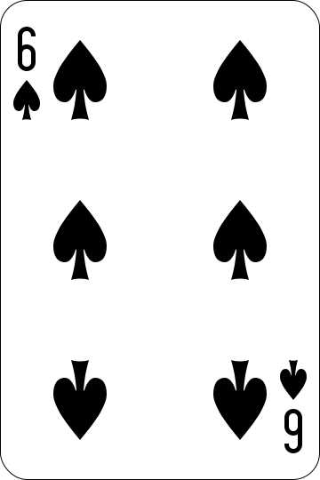
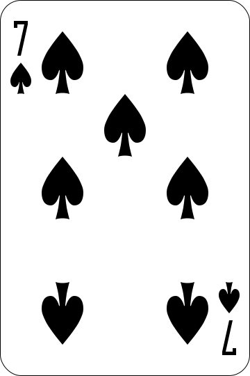
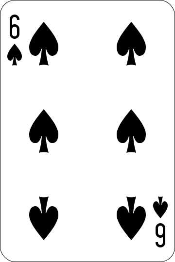
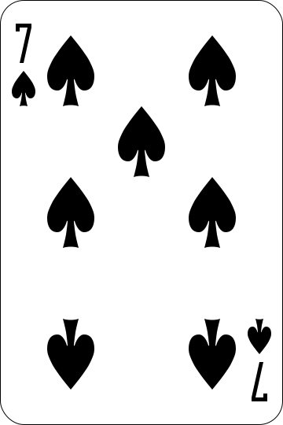

 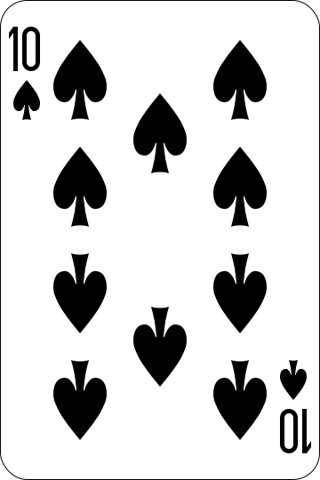
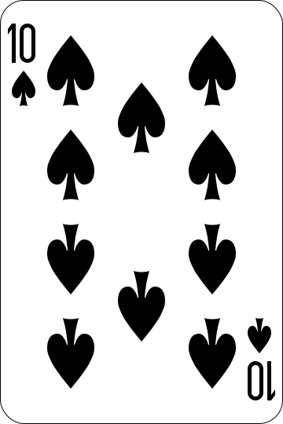

 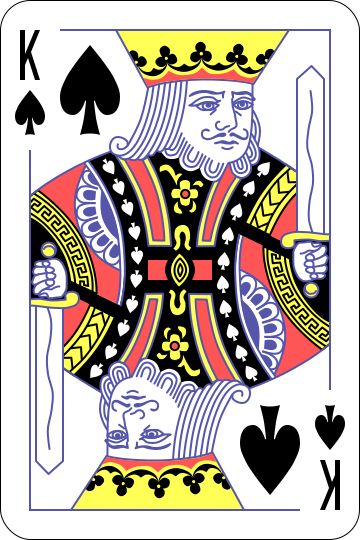
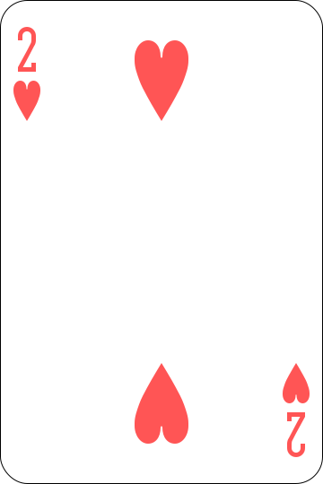
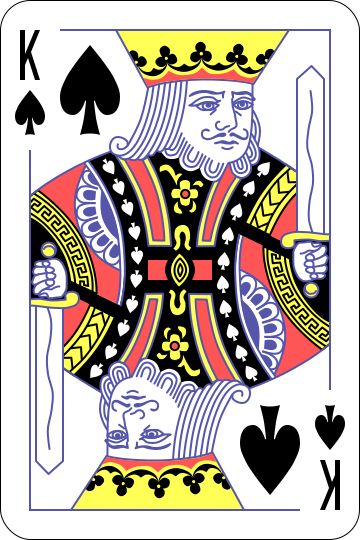
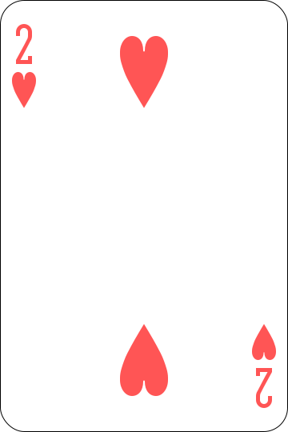
 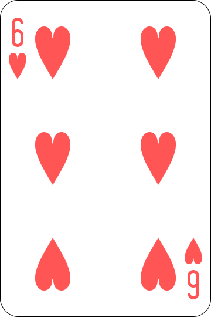
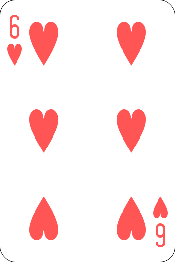


 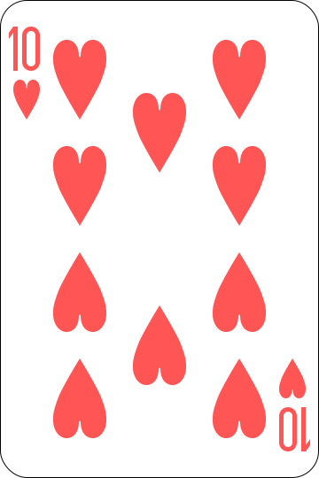
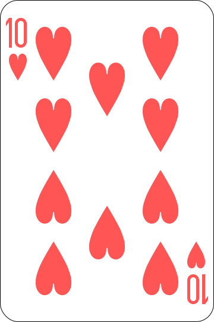


 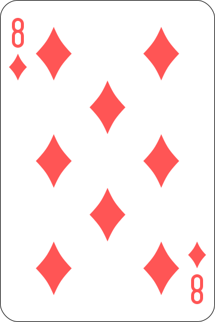
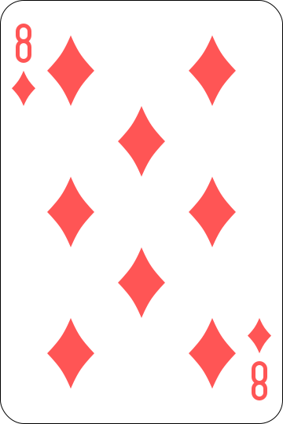


 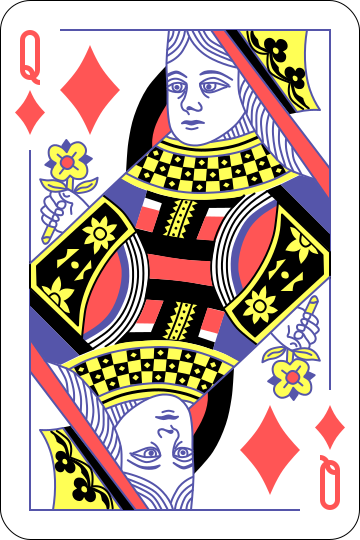
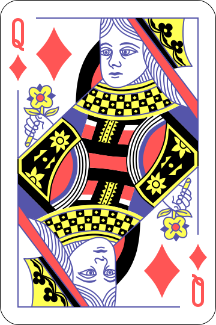


 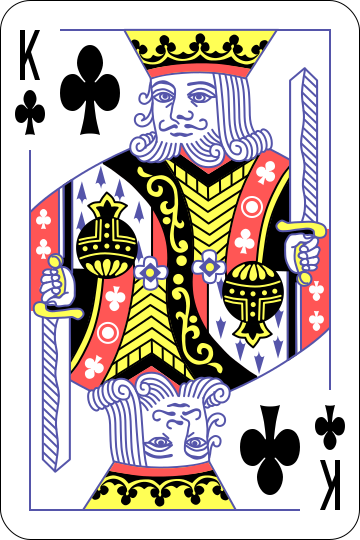
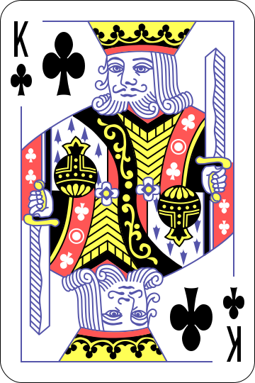